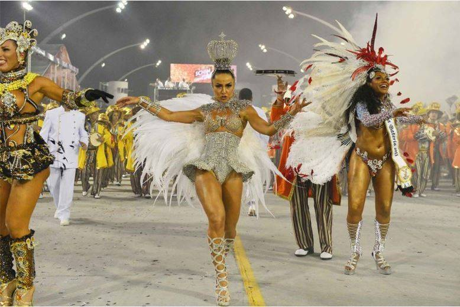
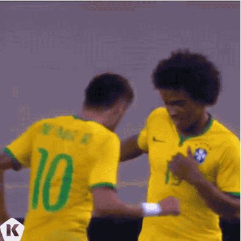

O samba é uma dança e um gênero musical brasileiro considerado um dos elementos mais representativos da cultura popular do Brasil. Este ritmo é fruto da miscigenação entre a música africana e europeia nos campos e na cidade. Devido a sua grande presença
em todo território nacional, o samba assume formas diferenciadas em cada região, mas sempre mantendo a alegria e sua cadência envolvente.
Origem do Samba

O samba foi criado no Brasil e sua origem são os batuques trazidos pelos negros escravizados, misturados aos ritmos europeus, como a polca, a valsa, a mazurca, o minueto, entre outros. Inicialmente, as festas de danças dos negros escravos na Bahia
eram chamadas de "samba ".
Os estudiosos apontam o Recôncavo Baiano como o berço do samba, especialmente o costume de dançar, cantar e tocar instrumentos em roda. Após a abolição da escravidão, em 1888, e da instituição da República, em 1889, muitos negros se dirigiram à então
capital da República, o Rio de Janeiro, em busca de trabalho. Porém, qualquer manifestação cultural africana era vista com desconfiança e criminalizada, como a capoeira e o candomblé. Com o samba não foi diferente. Assim, os negros começam a fazer
suas festas nas casas das "tias " ou "vovós ", verdadeiras matriarcas afro-descendentes que acolhiam os batuques. No Rio de Janeiro, o mais célebre desses lugares era a casa de Tia Ciata, mãe de santo carioca.
Da mesma forma, compositores de origem erudita como Chiquinha Gonzaga e Ernesto Nazareth, utilizam os ritmos africanos em suas composições. Ainda não era o samba tal como conhecemos hoje e, por isso, o chamavam de choro, valsa-choro e até mesmo tango.
Outro que seguiria o mesmo caminho seria o compositor Heitor Villa-Lobos.
Em 1917 foi gravado no Brasil aquele que é considerado o primeiro samba com o título "Pelo Telefone ", com letra de Mauro de Almeida e Donga. O samba foi entrando nos salões da elite e pouco a pouco foi se associando ao Carnaval, que até aquele
momento, tinha as marchinhas como trilha sonora. O advento do rádio e o talento de intérpretes como Carmem Miranda, Aracy de Almeida e Francisco Alves, fizeram o samba cada vez mais popular em todo Brasil.
Atualmente, o samba é considerado uma das principais características da cultura brasileira. Ele é tocado em bares, residências, festas e confraternizações das mais diversas classes sociais, em todas as regiões do país. Além disso, inúmeros
compositores, instrumentistas e cantores divulgam o ritmo também em outros países. Isso tornou o Brasil conhecido como o “país do samba”. O Carnaval é uma das festas de maior destaque para o samba. Nos desfiles, os sambas-enredo das escolas
de samba servem para contar histórias, enquanto passistas e foliões exibem suas fantasias e dançam. O Carnaval do Rio de Janeiro e o de São Paulo reúnem todos os anos milhares de sambistas e são acompanhados por milhões de pessoas, seja
nos sambódromos, seja em casa, através da televisão.
Além do samba-enredo, existem hoje vários tipos de samba, como samba-canção, samba-rock, samba de gafieira, samba-choro, samba-exaltação e samba de roda. O samba-enredo do Rio de Janeiro, ao lado do samba de terreiro e do partido-alto, são
considerados patrimônio material do Brasil pelo Instituto do Patrimônio Histórico e Artístico Nacional (IPHAN).
Samba no Brasil

O samba está presente em todas as regiões brasileiras e, em cada uma delas, são incorporados novos elementos ao ritmo, sem contudo, perder sua cadência característica. Os mais conhecidos são:
Samba da Bahia
Samba Carioca (Rio de Janeiro)
Samba Paulista (São Paulo)
Como Aprender a Dançar Samba
As aulas de samba de gafieira para iniciantes são ideais para quem deseja obter consistência corporal e preparar o corpo para o período do carnaval. Essas aulas de dança são indicadas para quem ainda não sabe nada sobre os movimentos do ritmo
do samba ou para quem já consegue sambar, mas deseja se especializar ainda mais! Na aula de samba de gafieira para iniciantes é possível aprender os movimentos e os giros do samba, com canções muito animadas.
Romário
Trança
Passo do malandro
Pião aberto
Além desses movimentos, é possível também aprender os passos básicos nas aulas de samba. Por isso, o samba de gafieira aula é uma excelente opção para conhecer mais sobre a cultura do samba e aprender a dançar. Se você deseja aprender a sambar,
se inscreva em cursos de dança, pois essa é a melhor forma de se tornar um expert em samba! Vale lembrar que os cursos podem ser realizados através de aula de dança online ou presencial (lembre-se: você também pode aprender outros tipos
de dança, como o funk e outros ritmos brasileiros). Portanto, escolha a melhor opção para a sua rotina e inicie o curso para melhorar o seu condicionamento físico e a sua saúde em geral! Depois é só se beneficiar com o curso de dança e
sambar bastante durante os festivais de gafieira!